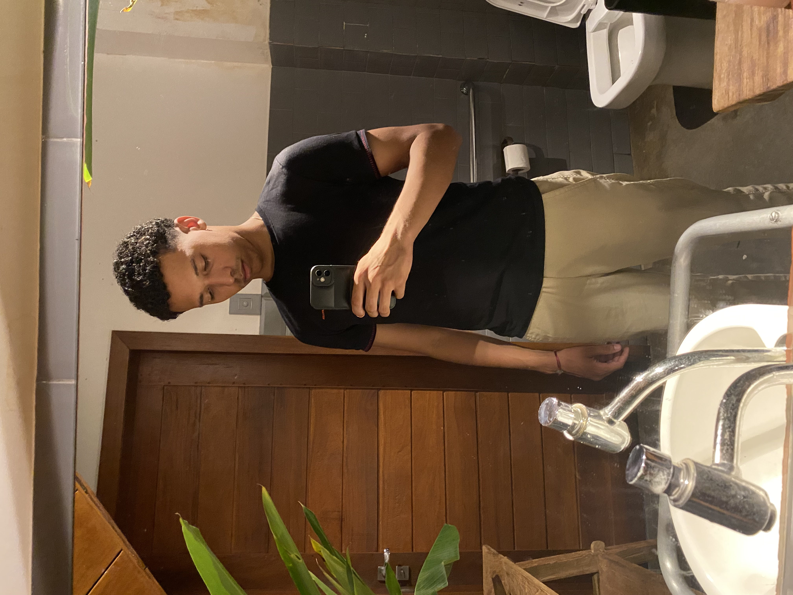

Nicolas
Responsável por criar e validar o formulário de cadastro, além de estilizar a interface inicial do fluxo de criação.
Sobre nós
O CineLog nasceu da ideia de criar um espaço pessoal para guardar os filmes que marcaram nossa jornada, seja por emoção, nostalgia ou por aquela cena que fica na memória para sempre. Aqui, a paixão por cinema se mistura com uma experiência prática e moderna de organização.
Somos uma equipe dedicada a criar experiências digitais que unem design, funcionalidade e emoção. Nossa missão é transformar ideias em projetos acessíveis, bonitos e úteis para pessoas que gostam de organizar sua vida e suas paixões em um único lugar.
O CineLog foi pensado como um catálogo pessoal, mas também como um reflexo do nosso gosto por filmes, histórias e a cultura cinematográfica.
Responsável por criar e validar o formulário de cadastro, além de estilizar a interface inicial do fluxo de criação.
Foca na área de visualização dos filmes, nos cards e na apresentação responsiva da listagem.
Cuida da funcionalidade de edição, do formulário de atualização e da manutenção das informações do filme.

Responsável pela exclusão dos filmes, pelo uso do localStorage e pela garantia de que os dados permaneçam salvos.